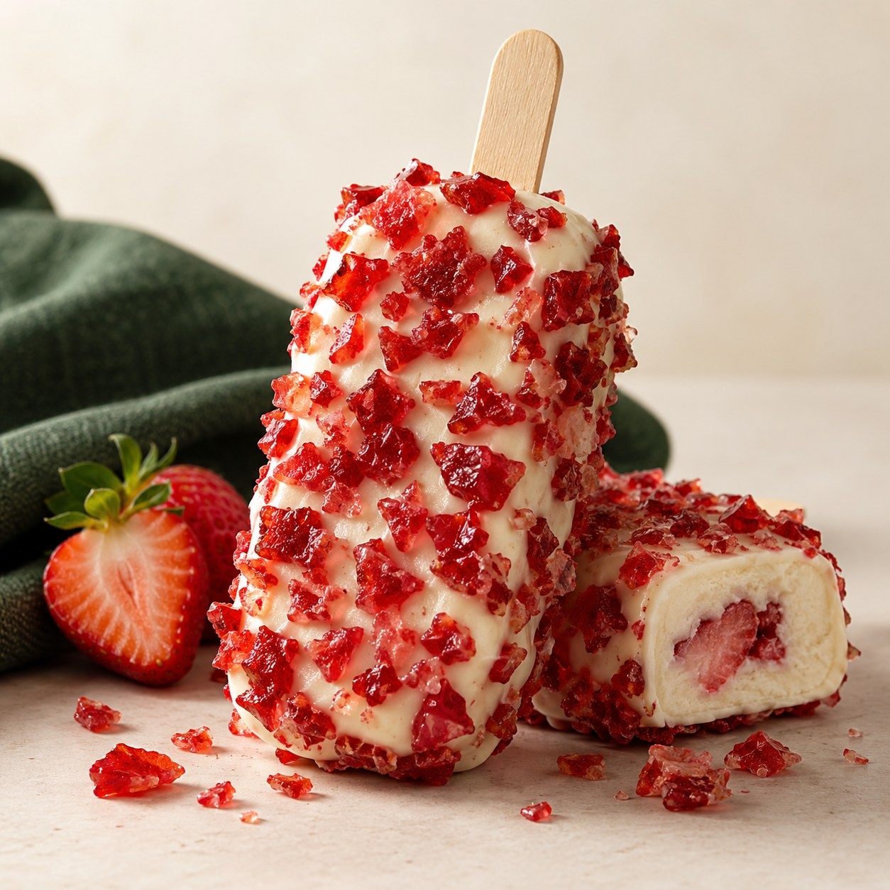
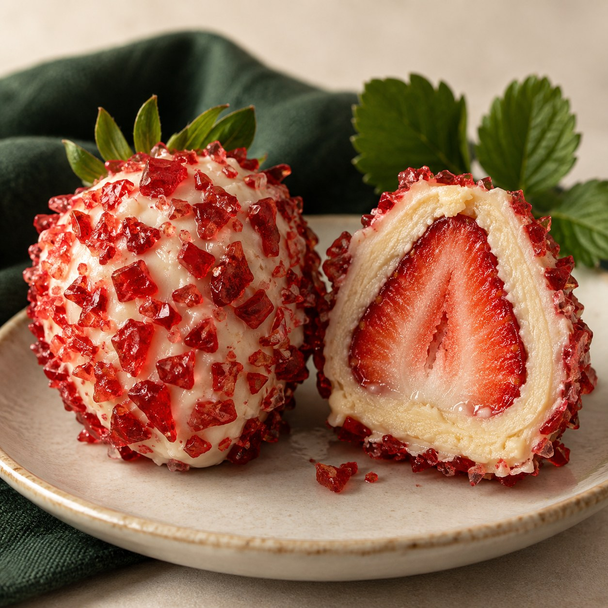
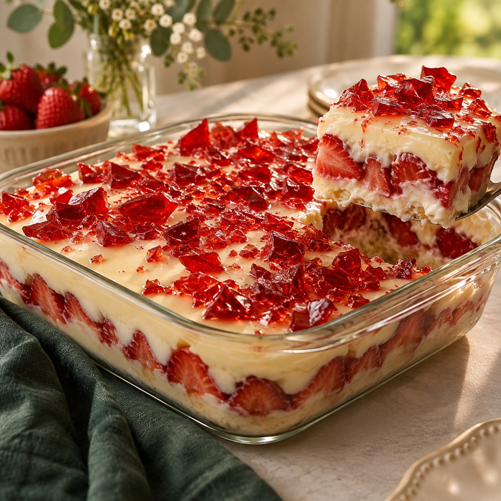

01
DOCE VIRAL • EDIÇÃO 01
Aprenda a preparar 6 versões do Morango Cravejado, organizar seus custos e chegar a um preço de venda baseado nos números do seu próprio lote.

UMA TENDÊNCIA, VÁRIAS POSSIBILIDADES
O Doce Viral reúne o processo em uma sequência prática: preparar as bases, escolher os produtos, registrar o rendimento real e calcular o preço com mais clareza.
MINI CARDÁPIO
Comece com uma ou duas opções e amplie conforme seu processo.


Fruta, brigadeiro branco, cobertura e cristais.
Versão gelada e prática para dias quentes.
Camadas de creme, fruta e acabamento crocante.
Montagem visível e pronta para transportar.
Imagens ilustrativas. O resultado varia conforme ingredientes, técnica e acabamento.
O QUE VOCÊ RECEBE
26 páginas com bases, montagem, cuidados, embalagens e organização do primeiro lote.
Campos prontos para registrar os valores e o rendimento real de cada produto.
Atualize seus ingredientes, escolha a margem e veja custo unitário, preço sugerido e lucro bruto.
Mini cardápio, 10 textos prontos e checklist para organizar a primeira produção.
SEM COMPLICAÇÃO
Selecione uma ou duas versões para testar primeiro.
Pese os ingredientes e anote o rendimento obtido.
Atualize a planilha e monte seu preço com base no lote.
ACESSO DIGITAL
Guia completo + calculadora automática de preços.
DÚVIDAS FREQUENTES
Não. O produto é 100% digital e pode ser acessado em celular, computador ou tablet.
Não. O guia recomenda começar com uma ou duas opções, testar o processo e ampliar depois.
Ela apresenta uma sugestão com base nos custos e na margem informada. Você ainda deve considerar mercado local, impostos, taxas, mão de obra e outras despesas do negócio.
Não. Custos, procura, preço de venda e resultados variam conforme região, fornecedores, execução e divulgação.
QUASE LÁ
O produto está pronto. Assim que o link de pagamento for adicionado, este botão levará diretamente à compra.